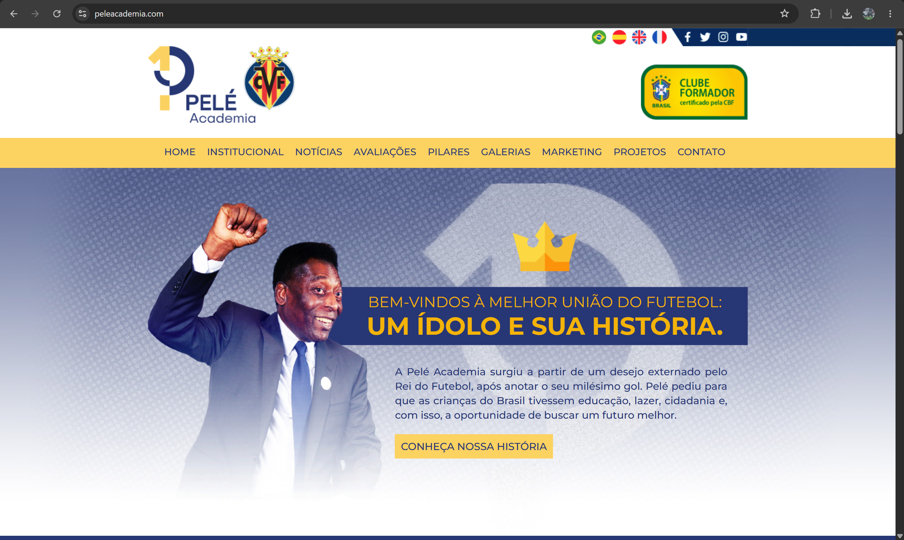
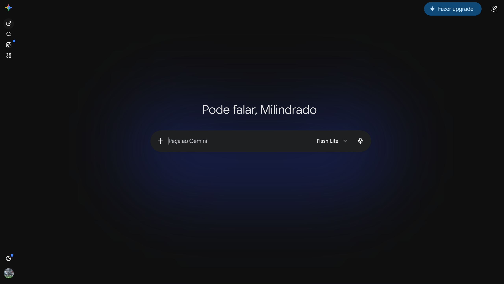

Site atual da Pelé Academia
peleacademia.com — referência de marca
PegamosO azul-marinho + dourado, a coroa e o legado do “1000º gol”.
DescartamosO visual datado e poluído (gradientes pesados, layout de 2012).
Challenge Pelé Academia · FIAP · Front-End Design
A direção visual da plataforma: as referências que estudamos, o que aproveitamos, o que descartamos — e por quê.
O conceito
Cada atleta vira uma carta/dossiê — foto, score de IA, atributos e a coroa como selo de elite e legado do Rei. Não é figurinha de coleção: é o talento visto, medido e valorizado. Une o calor do futebol de base brasileiro ao rigor dos dados.
“A plataforma séria da Pelé Academia que enxerga, mede e valoriza o próximo craque brasileiro — com o peso do legado do Rei.”
Para quem · e a decisão de segundos
Decisão: “como me mostro e evoluo pra ser descoberto?” Precisa ver seu score, mídias e peneiras num relance.
Decisão: “esse atleta vale meu contato?” Precisa filtrar e ler a análise de IA em segundos, e iniciar conversa segura.
Decisão: “quem priorizar e mediar agora?” Precisa de alertas de retenção, fila de mediação e visão da operação.
Análise crítica

peleacademia.com — referência de marca

UI de IA — referência para o bloco “Análise da IA”

várzea / documental
 86Atleta
86Atletacultura do videogame
scouting profissional
El Gráfico / Placar
Cor
Tipografia
Identidade
Símbolo “Mira-X”: o X marca onde o talento foi encontrado. + a Carta do Atleta como objeto recorrente.